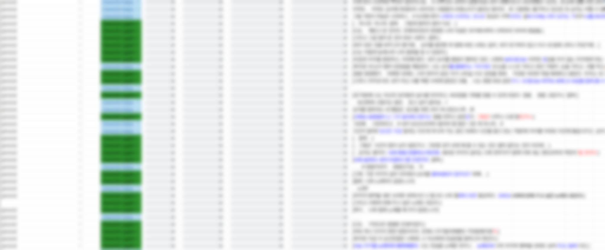

칼파 스토리 퇴고 및 수정
프로젝트 개요
기존 스토리 작가의 글을 다듬어, 보다 어울리는 스토리로 퇴고 및 플롯 수정

주요 작업
- 맞춤법, 띄어쓰기 등 문법적 오류 검사
- 기존 스토리에서 어울리지 않는 어투, 대사등을 고치고 핵심적인 개념을 수정하는 등의 퇴고 작업
성과 예측
- 이야기의 흐름이 매끄러워졌으며 이로 인해 추후 업데이트 시 플레이어들의 몰입감 향상이 기대된다.
기존 스토리 작가의 글을 다듬어, 보다 어울리는 스토리로 퇴고 및 플롯 수정
